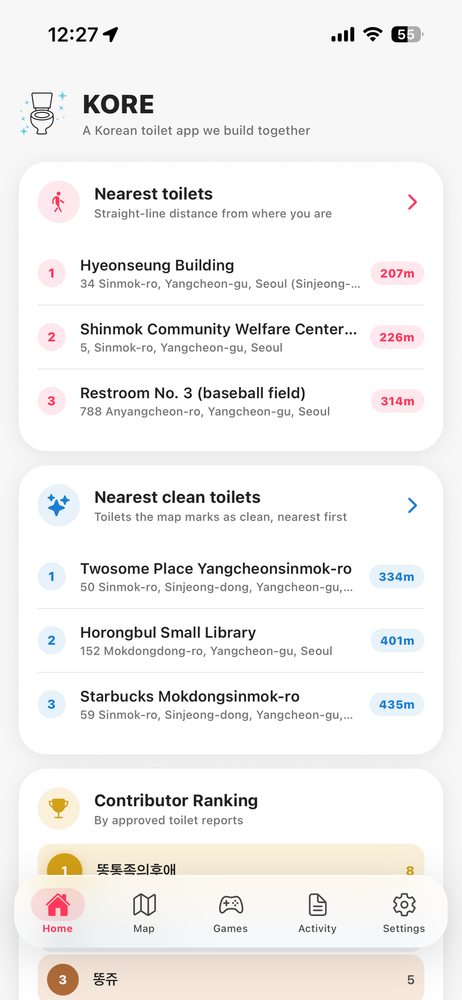
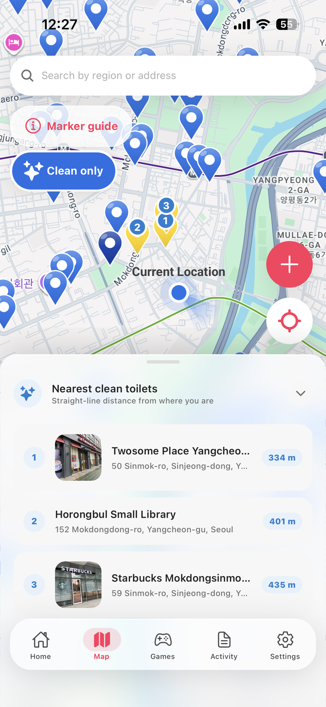
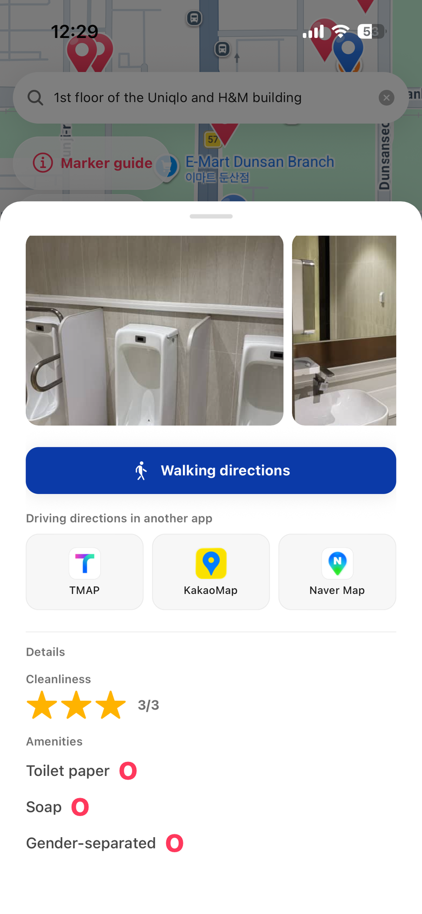
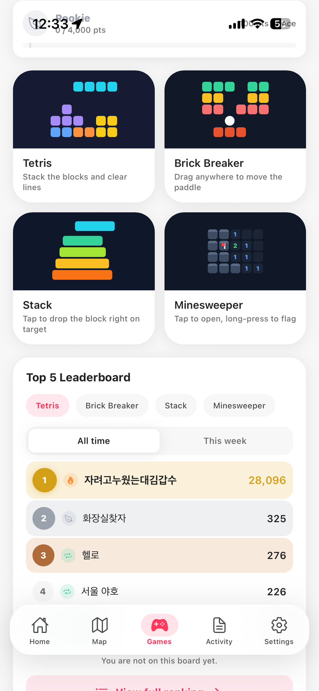

About KORE
KORE is a free map of 60,000+ public restrooms across South Korea, in English, Japanese, Simplified Chinese, Traditional Chinese and Korean. It shows which toilets are clean, what is inside (photos, baby-changing tables, accessible stalls, emergency bells), and walks you there. Built by two KAIST students, launched June 2026.
Finding a usable restroom is one of the most common, and least talked-about, problems visitors face in Korea. The information exists, but it is scattered across Korean-language blogs, map reviews and cafe posts that a traveller cannot search or read.
KORE brings it together in one map. It combines Korea's public restroom data with information collected from blogs and reviews and structured by an AI (LLM) pipeline the founders built themselves. Every restroom can be viewed in five languages. Clean restrooms are marked on the map; each place shows photos, opening hours, visitor ratings and reviews, and whether it has an emergency bell, entrance CCTV, a baby-changing table or an accessible stall. A walking route is drawn in the app, or the place can be handed to KakaoMap, Naver Map or TMAP.
KORE launched on iOS and Android in June 2026 and is free to download, with an optional subscription.
The problem
- Korea welcomed 18.94 million international visitors in 2025, a record. (Korea Tourism Data Lab)
- Tourist complaints filed in 2024 rose to 1,543, up 71.1% year on year. Lack of information and the language barrier are the core complaints. (Korea Tourism Organization)
- Clean-restroom information (cleanliness, photos, reviews) exists mostly in Korean, spread across blogs, map reviews and online cafe posts, in no form a visitor can use.
What it does
- 60,000+ restrooms nationwide: public toilets, subway stations, libraries, partner cafes and places found by the community
- 5 languages: English · 日本語 · 简体中文 · 繁體中文 · 한국어
- Clean-restroom markers and 3-level cleanliness ratings
- Inside information: photos, opening hours, visitor star ratings and reviews
- Safety and accessibility filters: emergency bell, entrance CCTV, accessible stall, baby-changing table, nursing room, open 24 hours, open now
- Walking directions in the app; one-tap hand-off to KakaoMap, Naver Map and TMAP
- Free to download on the App Store and Google Play; optional KORE Premium subscription




Safety & accessibility
Where Korea's local governments report it, KORE shows whether a restroom has an emergency bell and entrance CCTV, and whether it has an accessible stall, a baby-changing table or a nursing room. Travellers can filter the map by any of these. A feature that has not been reported is shown as not reported, never as absent.
Milestones
| Milestone | Date |
|---|---|
| Launched on iOS and Android | June 2026 |
| #3 in Utilities on the Korean App Store (#82 overall) | 2 Aug 2026 |
| Featured on SBS 〈생활의 달인〉 (Korean national TV) | 17 Aug 2026 |
| 40,000+ downloads | 8 Sep 2026 |
| Featured by Haps Korea Magazine | 2026 |
| Instagram and Facebook posts about KORE shared 200,000+ times | Sep 2026 |
Founders
Two high-school friends, both students at KAIST (Korea Advanced Institute of Science and Technology). The idea came from the founder's own travel experience: not being able to find a clean restroom when it mattered.
Chanyong Shim 심찬용
KAIST School of Computing; undergraduate researcher at the KAIST BREIL AI lab, where the data pipeline's LLM-agent work comes from. Previously founded a tutoring startup. Appeared on SBS 〈생활의 달인〉.
Seungmo Yeon 연승모
KAIST. Has built and run several AI-agent services, and built KORE's LLM-agent data pipeline with the founder. His personal YouTube channel has 150,000+ cumulative views.
How the data is built
- Korea's public restroom dataset is the base. Since February 2025 the government dataset no longer carries map coordinates, so KORE locates those restrooms itself.
- An LLM-agent pipeline collects restroom information scattered across blogs, map reviews and cafe posts, extracts cleanliness, location and amenities, and turns it into structured data.
- Visitors add ratings, reviews and photos; new places and edits they propose are reviewed before they go on the map.
Logo and screenshots
The app icon and the four screenshots above are free to use in coverage of KORE. Full-resolution files are available on request.

Where to find it
- App Store
- apps.apple.com/app/id6774883751
- China storefront
- apps.apple.com/cn/app/id6774883751 (KORE 韩国洗手间)
- Google Play
- play.google.com/store/apps/details?id=com.touristtoiletmap.app
- Website
- findshim.com/en
Seungmo Yeon, Co-founder. Interviews in English or Korean, by email.